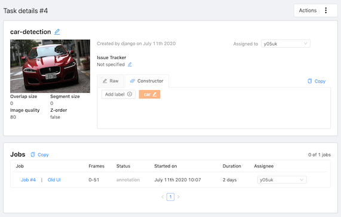
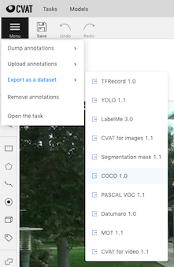
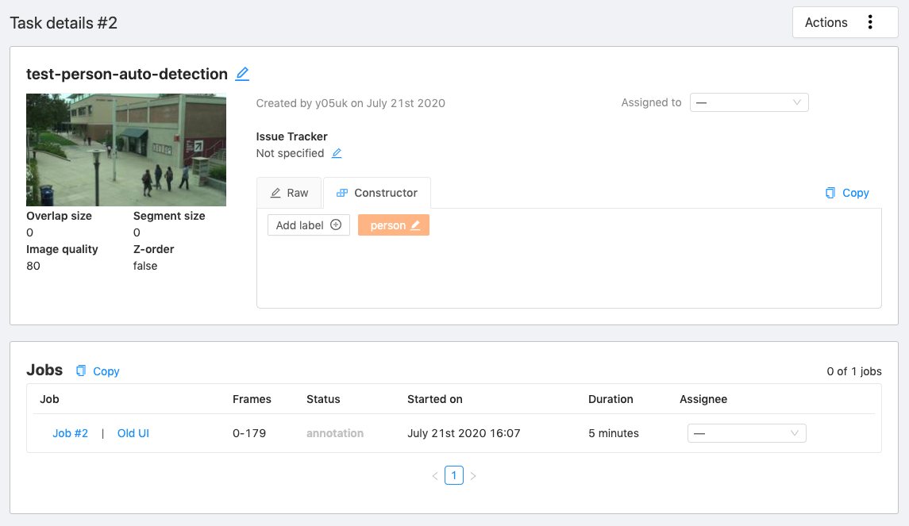
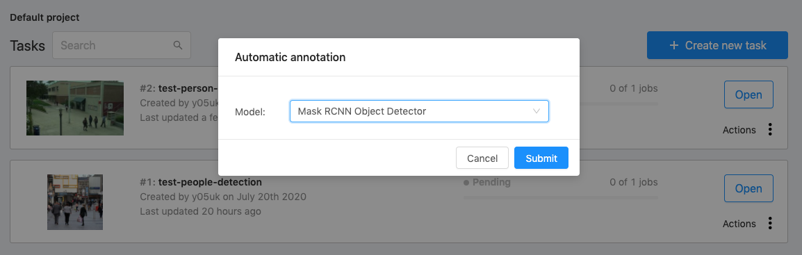
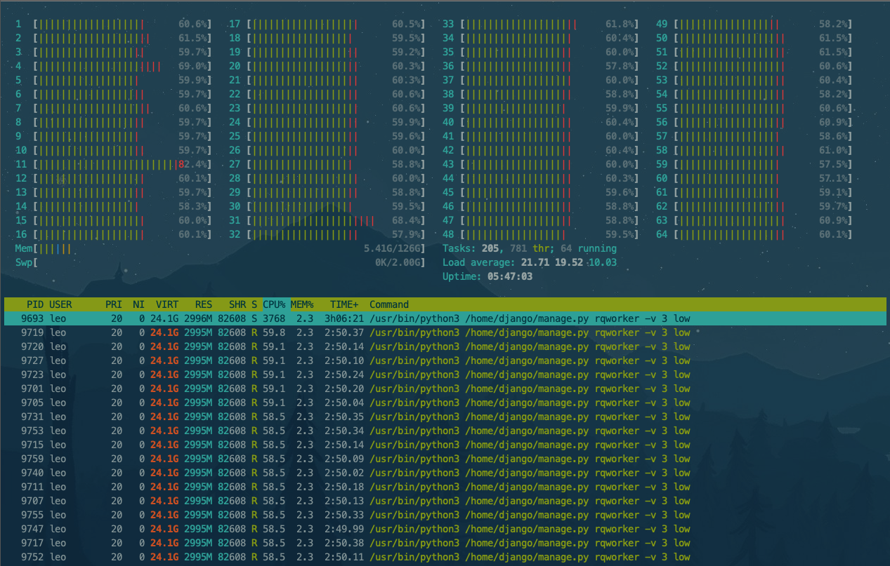
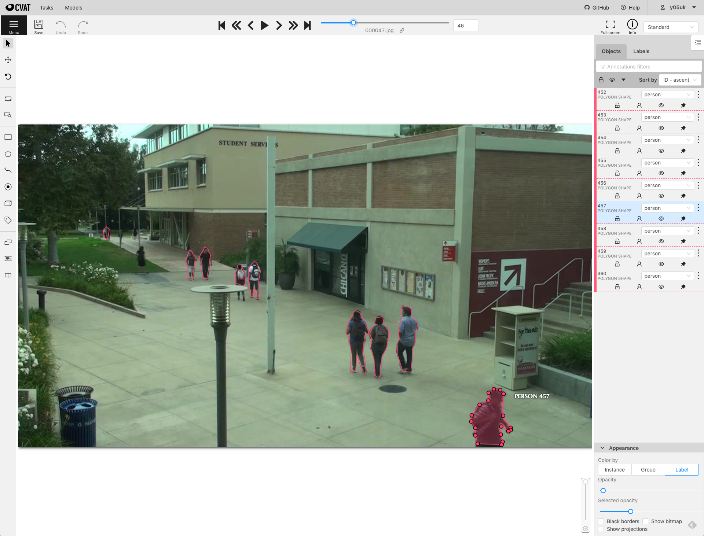
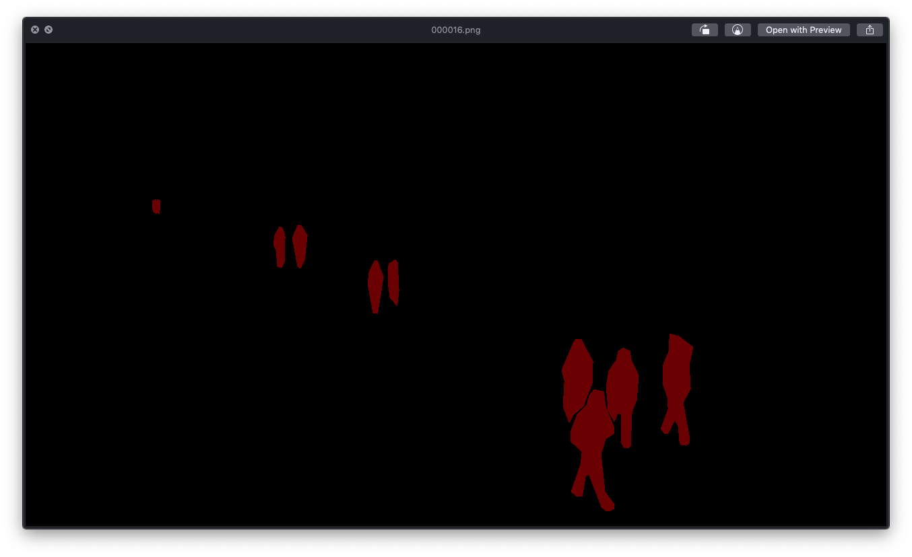
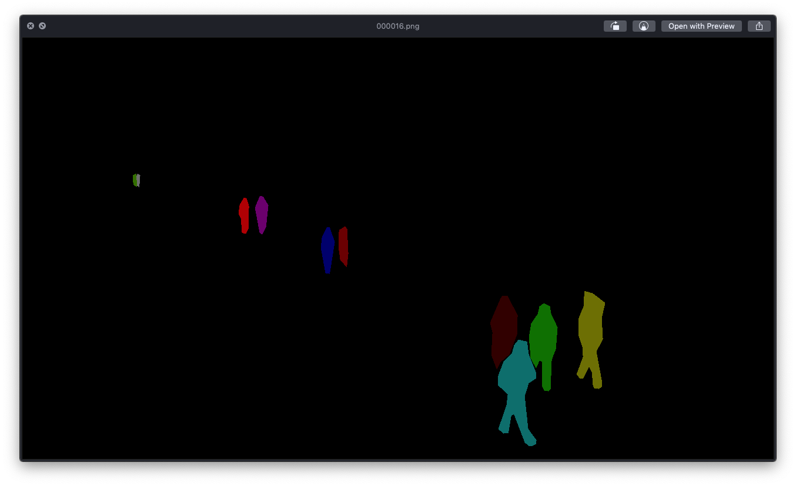

OpenCV CVAT (アノテーションツール)
OpenCV CVAT (アノテーションツール)
- 作成日: 2020/07/13
- 更新日: 2020/07/27
公式ウェブページ
インストール方法
特徴
- Dockerを利用しCVATの環境を構築することができます
Dockerfile, docker-compose.yml が提供されているので、以下の通りコマンドを実行するだけで cvat を起動することができます
1
2
3
4
5
6
7
8
9
10
11
12
13
14
15
16
17
18
19
20
21
22
23
24
25
26
27
28
29
30 | $ git clone https://github.com/opencv/cvat.git
$ cd cvat
$ git checkout v1.0.0
$ git branch -va
* (HEAD detached at v1.0.0) 07de714 Release 1.0.0 (#1335)
develop e372589 Bump lodash from 4.17.15 to 4.17.19 in /cvat-ui (#1913)
remotes/origin/HEAD -> origin/develop
remotes/origin/az/fix_dextr 9ee7dbd fixed dextr segmentation for grayscale images
remotes/origin/az/update_pip ef4bbd2 updated pip version
remotes/origin/bs/fix_canvas_built 8df6e79 Fixed built
remotes/origin/develop e372589 Bump lodash from 4.17.15 to 4.17.19 in /cvat-ui (#1913)
remotes/origin/master 07de714 Release 1.0.0 (#1335)
remotes/origin/nm/auth_rbac d819580 Merge remote-tracking branch 'origin/develop' into nm/auth_rbac
remotes/origin/nm/projects_ui cd55511 Merge remote-tracking branch 'origin/develop' into nm/projects_ui
remotes/origin/nm/serverless f36df30 Deleted outdated migration.
remotes/origin/nm/serverless_prototype 9dbd7b9 OpenFaaS prototype (dextr.bin and dextr.xml are empty).
remotes/origin/release-1.1.0 f1b0178 Add release 1.1.0-alpha date.
remotes/origin/zm/ann-quality-main 9a6817d Merge branch 'develop' into zm/ann-quality-main
remotes/origin/zm/ann-quality-merge 92504c7 Make merging plugin
$ docker-compose build
.
.
.
$ docker-compose up -d
.
.
.
## ユーザを作成する (http://localhost:8080/ にアクセスするときに必要なアカウントを作成する)
$ docker exec -it cvat bash -ic 'python3 ~/manage.py createsuperuser'
|
- ブラウザー で利用することが可能
- マルチユーザ での利用が可能
- 事前にユーザの作成と ユーザ権限を設定する必要がある
- 豊富な出力フォーマット
- 自動アノテーション をサポートしている
アノテーション
タスク作成

- アノテーション対象の画像ファイルを取り込む
- アノテーション (ラベル) の定義
- アノテーション情報の設定
- タスク名
- Z-order 利用する/しない
- 画像品質%
- Dataset repository URL (Option)
- Use LFS (Large File Support) 利用する/しない
利用方法
マニュアル アノテーションの実行
- オブジェクト選択:
- 矩形
- ポリゴン
- ポリライン (複数線 => ポリゴン)
- ポイント
- Cuboid (立方体)
- 操作
タスク作成のステップで "ラベル と 属性の定義" を事前に行うことで オブジェクト選択後、ラベルを選択し、必要があれば属性を設定します (例えば、"Person" ラベル + 属性 "歩いている", "男性" と設定することができる)

利用方法 (動画コンテンツ)
アノテーション情報出力
- アノテーション後、アノテーションファイルをダウンロードする
- アノテーションファイルのフォーマットは以下の通りです
- COCO 1.0
- Datamaro 1.0
- LabelMe 3.0
- MOT 1.0
- PASCAL VOC 1.1
- Segmentation mask 1.1
- TFRecord 1.0
- YOLO 1.1
- LabelMe 3.0形式のアノテーションファイルを取り込む (インポート) ことが可能

- メニュー -
Export as a dataset > COCO 1.0 を選択することで COCO 1.0 フォーマットのデータセットをダウンロードすることができます
- CVATでCOCO 1.0 フォーマットのデータセットの作成に成功すると、自動的にダウンロードが開始され、ファイル名 -
task_test-person-movie-auto-annotation-{DATE_TIME}-coco 1.0 がローカルディスクに保存されます
COCO 1.0出力結果
ダウンロードファイル
| $ ls -l ./task_test-person-movie-auto-annotation-2020_07_21_07_47_19-coco\ 1.0.zip
-rw-r--r--@ 1 yosukehara staff 63143552 Jul 27 15:14 ./task_test-person-movie-auto-annotation-2020_07_21_07_47_19-coco 1.0.zip
|
COCO 1.0フォーマット ファイルの確認
- 次に 正しく COCO 1.0フォーマットのデータセットが作成されているか確認します
1
2
3
4
5
6
7
8
9
10
11
12
13
14
15
16
17
18
19
20
21
22
23
24
25 | $ unzip
.
.
.
$ cd task_test-person-movie-auto-annotation-2020_07_21_07_47_19-coco\ 1.0
$ ls -l
total 0
drwxr-xr-x@ 3 yosukehara staff 96 Jul 27 15:15 annotations
drwxr-xr-x@ 586 yosukehara staff 18752 Jul 27 15:15 images
$ tree
.
├── annotations
│ └── instances_default.json
└── images
├── frame_000000.jpg
├── frame_000001.jpg
├── frame_000002.jpg
├── frame_000003.jpg
.
.
.
├── frame_000581.jpg
├── frame_000582.jpg
└── frame_000583.jpg
|
1
2
3
4
5
6
7
8
9
10
11
12
13
14
15
16
17
18
19
20
21
22
23
24
25
26
27
28
29
30
31
32
33
34
35
36
37
38
39
40
41
42
43
44
45
46
47
48
49 | $ cat instances_default.json | jq
{
"categories": [
{
"id": 1,
"supercategory": "",
"name": "person"
}
],
"annotations": [
{
"id": 1,
"category_id": 1,
"iscrowd": 0,
"area": 684,
"image_id": 0,
"segmentation": [
[
381,
332.5,
377,
318.5,
373.5,
328,
367.5,
329,
368.5,
306,
364.5,
297,
376,
272.5,
383.5,
290,
381,
332.5
]
],
"bbox": [
364.5,
272.5,
19,
60
]
},
.
.
.
// (繰り返し: 各画像のアノテーション情報)
|
images ディレクトリを確認すると、アノテーションを行なった画像ファイルが存在します- アノテーション元ファイルが動画ファイルの時、CVATは自動的に 各フレームを画像ファイルに変換します
自動アノテーション
NOTE: Masterブランチの開発版では動作しないので、 Tag: v1.0.0 を指定してチェックアウトする必要があります
Tensorflow Object Detection Auto Annotation
Tensorflow + Faster RCNN Inception Resnet v2 Atrous Coco Model モデルを使った自動アノテーション機能です
Dockerイメージ作成
1
2
3
4
5
6
7
8
9
10
11
12 | $ docker-compose \
-f docker-compose.yml \
-f components/tf_annotation/docker-compose.tf_annotation.yml build
.
.
.
$ docker images
REPOSITORY TAG IMAGE ID CREATED SIZE
cvat latest 11648748cb1c 23 hours ago 2.91GB
cvat_cvat_ui latest 6061beb097b0 26 hours ago 35.7MB
nginx stable-alpine 8c1bfa967ebf 10 days ago 21.5MB
ubuntu 16.04 c522ac0d6194 2 weeks ago 126MB
|
外部公開するときは docker-compose.yml の以下の箇所を修正します。以下は、 IP-Address 10.0.1.55 のホストで稼働する CVATを外部公開する例です
1
2
3
4
5
6
7
8
9
10
11
12
13
14 | $ git diff
diff --git a/docker-compose.yml b/docker-compose.yml
index 3bb1eb7..d523ceb 100644
--- a/docker-compose.yml
+++ b/docker-compose.yml
@@ -86,7 +86,7 @@ services:
- cvat
- cvat_ui
environment:
- CVAT_HOST: localhost
+ CVAT_HOST: 10.0.1.55
ports:
- "8080:80"
volumes:
|
Dockerコンテナ作成, 起動
1
2
3
4
5
6
7
8
9
10
11
12 | $ docker-compose \
-f docker-compose.yml \
-f components/tf_annotation/docker-compose.tf_annotation.yml \
up -d
$ docker ps -a
CONTAINER ID IMAGE COMMAND CREATED STATUS PORTS NAMES
db3909143a43 nginx:stable-alpine "/bin/sh -c 'envsubs…" 4 seconds ago Up 3 seconds 0.0.0.0:8080->80/tcp cvat_proxy
70150c367671 cvat_cvat_ui "nginx -g 'daemon of…" 4 seconds ago Up 4 seconds 80/tcp cvat_ui
20fd940eadaa cvat "/usr/bin/supervisord" 5 seconds ago Up 4 seconds 8080/tcp, 8443/tcp cvat
9e903c198ba1 postgres:10-alpine "docker-entrypoint.s…" 5 seconds ago Up 4 seconds 5432/tcp cvat_db
49696ab12e5f redis:4.0-alpine "docker-entrypoint.s…" 5 seconds ago Up 5 seconds 6379/tcp cvat_redis
|
自動アノテーション実行
- タスクを作成し、アノテーション対象のファイル (この例では画像ファイル。動画ファイルも可能) のアップロードと、各種設定を行い、保存します
Fig. Auto-annotation 1

- タスク一覧画面に戻った後に、自動アノテーション対象のタスク内にある
Actions を選択します
Fig. Auto-annotation 2

- サブウィンドウ Automatic annotationの Model ドロップダウンリスト内から モデル - Mask RCNN Object Detector を選択し、実行します
Fig. Auto-annotation 3

- 進捗状況は、Fig. Auto-annotation 2 の Automatic annotation で確認することができます。重い処理になるのでCPUコア数が多くかつRAMの容量が多いワークステーション OR サーバで実行することをお勧めします
Fig. 自動アノテーション実行時 htop

- アノテーション終了後、タスクを開き自動アノテーションの結果を確認します
Fig. アノテーション画面

- アノテーション画面の中にあるメニュー (画面左上) から
Export As a dataset > Segmentation mask 1.1 を選択することで SegmentationClass と SegmentationObject が生成されます。また各種フォーマットでデータセットをダウンロードすることが可能です
Fig. Segmentation Class

Fig. Segmentation Object
